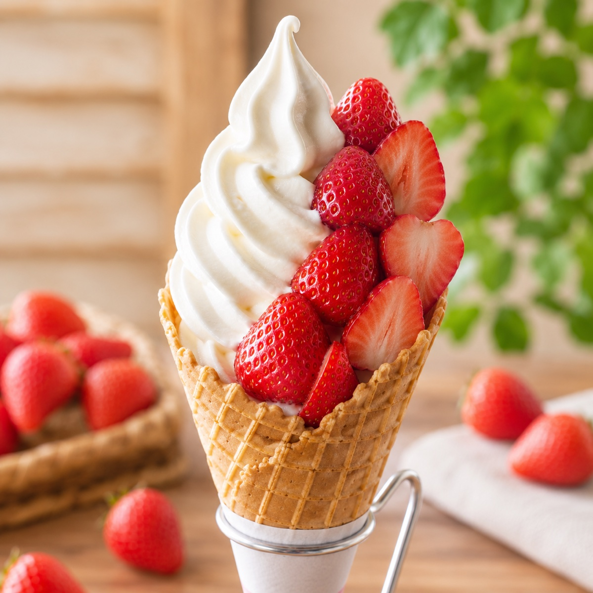

自社農園直送の完熟ベリー
看板メニューは、完熟いちごとブルーベリーを贅沢に使った濃厚でみずみずしいソフトクリーム。果実の香りが主役になるよう、素材の鮮度を大切にしています。
Farm Berry Soft Cream
宮崎県高鍋町の農園カフェ。自社農園直送の完熟いちごとブルーベリーを、香ばしく焼き上げたワッフルコーンで味わう一日を。

Our Story
看板メニューは、完熟いちごとブルーベリーを贅沢に使った濃厚でみずみずしいソフトクリーム。果実の香りが主役になるよう、素材の鮮度を大切にしています。
既製品ではなく、店内で丁寧に焼き上げる手作りワッフルコーン。香ばしさとパリッとした食感が、ソフトクリームの余韻を引き立てます。
収穫のタイミングに合わせて、お品書きは軽やかに変化。今日だけの組み合わせに出会えるライブ感も、新山いちご園らしさです。
Access